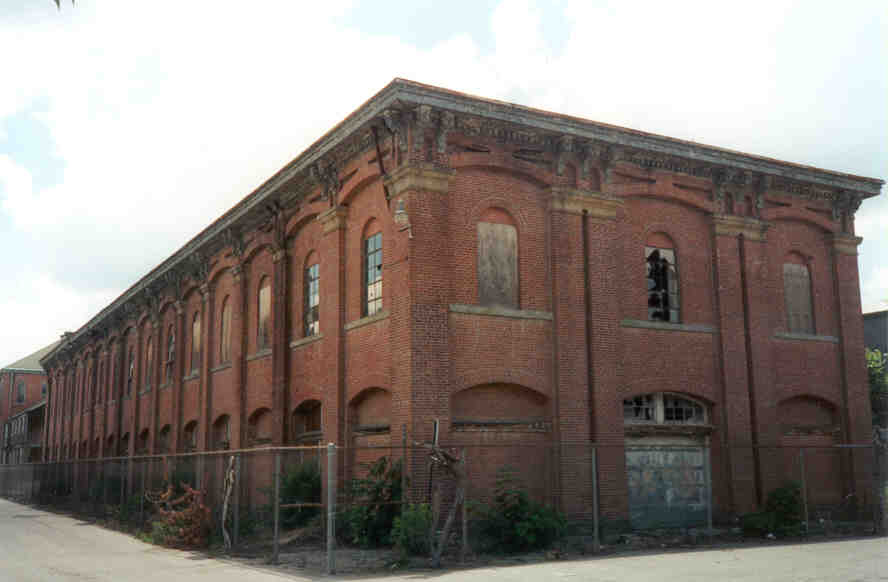
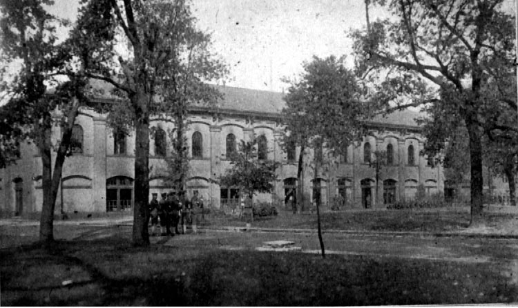
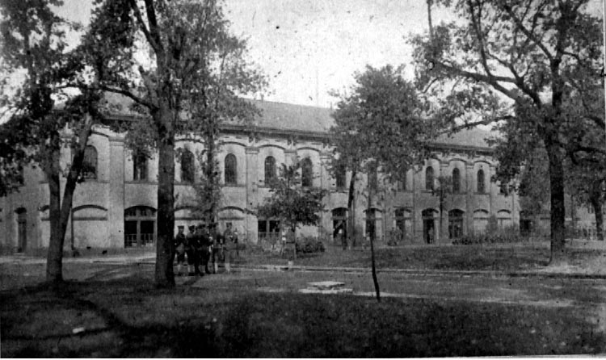
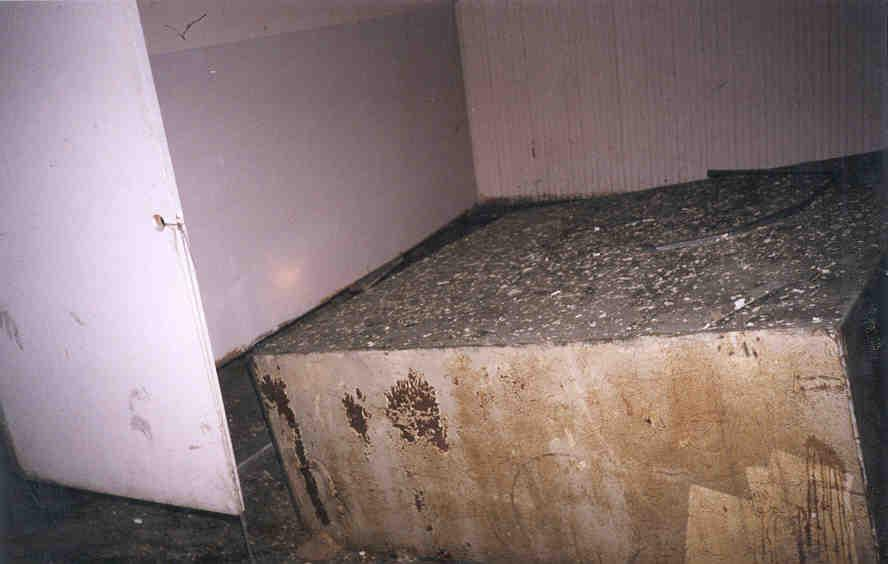
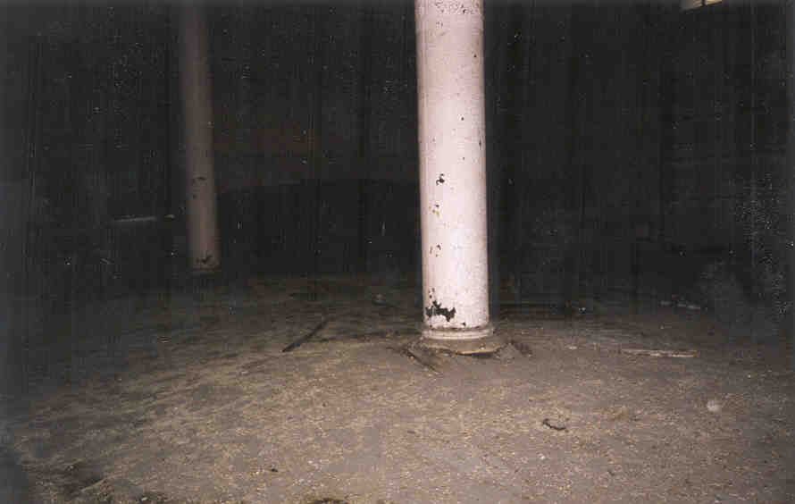
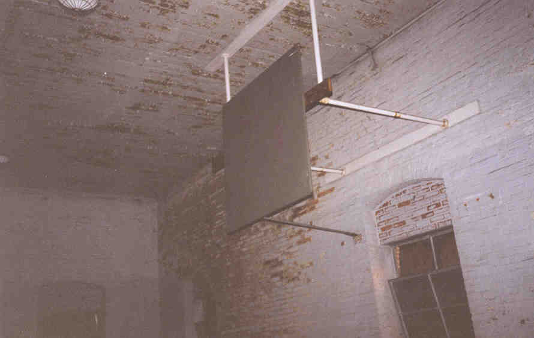
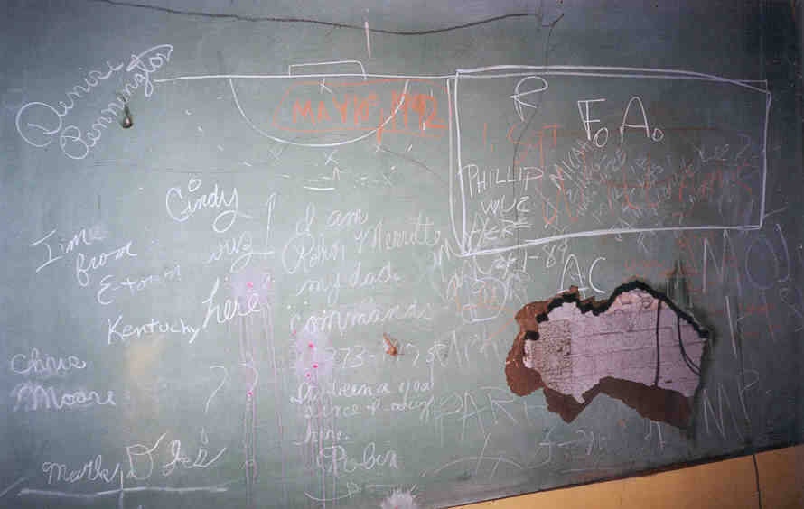

Company A Quarters

Right next to the Company C Quarters building is Company A Quarters, a building of about the same size but much less interesting architecture. Both were built around the same time. Below are two photos of the building--the first from the year 1900, the second from 1918.
 

1900, 1918
This building is very impressive--on a level with its neighbor, the old Company C Quarters. The first floor is marked by two large rooms decorated with spraypainted art (including a stencil of Hitler's face), several weird signs, and an extremely uneven and dangerous floor. At the foot of the main staircase the floor is completely gone; you have to step down to ground level to cross to the other half of the building. In another place a big heavy boxlike thing has warped the wooden floor to the point where the room feels like a funhouse.


Upstairs in the south wing we were surprised to find ourselves on a dusty and worn-down basketball court, complete with dual backboards and free-throw lines.

At the other end was a classroom of some sort, with an elevated storage platform at the rear of the room. A multi-layered sliding chalkboard fronted the room. Lots of interesting writing left on it--one seems to be a message from the daughter of one of the commanders.

A cool building, made especially interesting by the different artistic endeavors left behind by trespassing Fort Hayes students.
Back